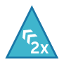
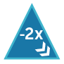

Help
CleverMind è un gioco rompicapo che allena il pensiero induttivo. Lo scopo del gioco è scoprire un codice segreto formato da un insieme di pezzi nascosti sulla base degli effetti che questi producono sugli impulsi inseriti, con le sue mosse, dal giocatore.
Qui di seguito trovi una breve guida al gioco. Puoi trovare utili anche un esempio di risoluzione di una sfida e le FAQ (Risposte alle domande più frequenti).
Regole del gioco: La sfida si svolge su una tavola, detta Black Box, circondata da un bordo colorato. Ogni mossa inizia e termina in una casella del bordo, definita dalla combinazione di lettera e numero (per esempio “A5”).
Per muovere, si seleziona una casella del bordo e si indica il valore d’entrata dell’impulso, scegliendo tra +1 bianco e -1 bianco. L’input inserito, se non incontra nessun pezzo del codice segreto, prosegue dritto ed esce invariato dalla casella del bordo alla fine della riga o della colonna da cui è entrato.
Se invece lungo il tragitto passa su caselle in cui sono posizionati i pezzi del codice segreto muta direzione e valore secondo le regole d’interazione dei pezzi incontrati, che verranno descritte in seguito.
L’abilità del giocatore consiste nel riuscire a individuare nel minor numero di mosse i pezzi del codice segreto analizzando le variazioni subite dagli input.
Il feedback che il giocatore riceve a ogni mossa riporta: la casella sul bordo raggiunta a fine percorso; il colore e il valore numerico dell’input in seguito alle interazioni con i pezzi incrociati; da quante caselle è passato (Passi) e quanti pezzi ha incontrato prima di uscire dalla Black Box (Rimbalzi).
Regole d’interazione: I pezzi interagiscono con l’input secondo le seguenti regole:
incontrando un cerchio chiaro ( abbreviazione: Cc) l’input cambia colore (passando da bianco a nero e viceversa) e prosegue in direzione Nord lungo la verticale (↑);
incontrando un cerchio scuro ( abbreviazione: Cs) l’input cambia colore e prosegue in direzione Sud lungo la verticale (↓);
incontrando un quadrato chiaro ( abbreviazione: Qc) l’input aumenta il proprio valore numerico di 1 e prosegue muovendosi in orizzontale in direzione Ovest (←);
incontrando un quadrato scuro ( abbreviazione: Qs) l’input riduce il proprio valore numerico di 1 e prosegue muovendosi in orizzontale in direzione Est (→);
incontrando un triangolo chiaro ( abbreviazione: Tc) il valore numerico viene moltiplicato per 2 e il movimento prosegue in diagonale in direzione Nord-Ovest (↖︎);
incontrando un triangolo scuro ( abbreviazione: Ts) il valore numerico viene moltiplicato per -2 e il movimento prosegue in diagonale in direzione Sud-Est (↘︎);
incontrando un rombo chiaro ( abbreviazione: Rc) il valore numerico viene moltiplicato per 3 e il movimento prosegue in diagonale in direzione Nord-Est (↗);
incontrando un rombo scuro ( abbreviazione: Rs) il valore numerico viene moltiplicato per -3 e il movimento prosegue in diagonale in direzione Sud-Ovest (↙).
L'effetto dei pezzi sull'intensità dell'impulso segue le regole dell'aritmetica.
Ad esempio, se l'intensità di un impulso è -1, incontrando un triangolo scuro diventerà di (-1) × (-2) = +2. Analogamente, incontrando un rombo scuro: (-1) × (-3) = +3.
All’interno della stessa mossa il pezzo agisce solo una volta, poi si disattiva e non influisce più sull’input che dovesse ripassasse dalla casella in cui si trova.
Nelle sfide generate automaticamente dal gioco non sono mai presenti più di due pezzi nella stessa riga o colonna.
Verifica: Durante il gioco è possibile verificare le proprie ipotesi sulla posizione dei pezzi che formano il codice segreto toccando una casella della Black Box e selezionando il pezzo scelto nel pop up che si apre. Se l’ipotesi è corretta il pezzo indovinato rimane visibile sulla tavola di gioco. La partita si conclude quando tutti i pezzi che compongono il codice segreto vengono svelati. In caso di sfida tra più giocatori a riconoscere lo stesso codice segreto, vince chi riesce a individuarlo in meno mosse.
Livelli di gioco: Si può variare la difficoltà del gioco entrando in Impostazioni e agendo su varie opzioni:
- dimensione della tavola di gioco (4x4, 5x5 o 6x6 caselle), che influisce anche sul numero dei pezzi nascosti che compongono il codice segreto;
- attivare la modalità esperto, che influisce sul numero di pezzi nascosti e sull’algoritmo di inserimento, aumentando tendenzialmente il numero di rimbalzi e la complessità del gioco;
- nascondere l’indicazione del numero di “passi” compiuti dall’input. Quante caselle, cioè, sono state attraversate durante la mossa;
- nascondere l’indicazione del numero di “rimbalzi”, ovvero quanti pezzi attivi ha incontrato l’input durante la mossa.
Modalità Studio: Oltre a giocare contro il computer, che provvede a generare in automatico la disposizione dei pezzi, è possibile impostare direttamente il codice segreto. Per inserire un pezzo nella modalità Studio si tocca la casella in cui si desidera inserirlo e poi si sceglie il pezzo che si vuole aggiungere dal pop-up che si apre. Nella versione Studio è possibile rendere visibile il posizionamento dei pezzi sulla tavola.
La modalità Studio è utile sia per impratichirsi sull’effetto combinato di più interazioni, sia per predisporre sfide da lanciare ad altri giocatori. Permette inoltre di visualizzare il codice segreto di una sfida irrisolta. Dopo aver visualizzato il codice segreto in Studio non è più possibile continuare la stessa sfida tornando nella modalità Gioco.
Il modo più comodo per condividere una sfida è premere sull’icona 📋. La disposizione dei pezzi che compone il codice segreto è automaticamente memorizzata in una URL facilmente condivisibile.
Gioco del giorno: ogni giorno una sfida. Premendo l’icona 📆 sarà caricata, come codice segreto, la configurazione del giorno.
Sono disponibili 6 giochi del giorno. Per ognuna delle dimensioni della tavola di gioco, infatti, sono disponibili un gioco del giorno per la modalità esperto e una per la modalità standard.
E ora non resta che provare!
Se vuoi segnalare un problema o suggerire un miglioramento, puoi farlo da qui.
Buon divertimento!